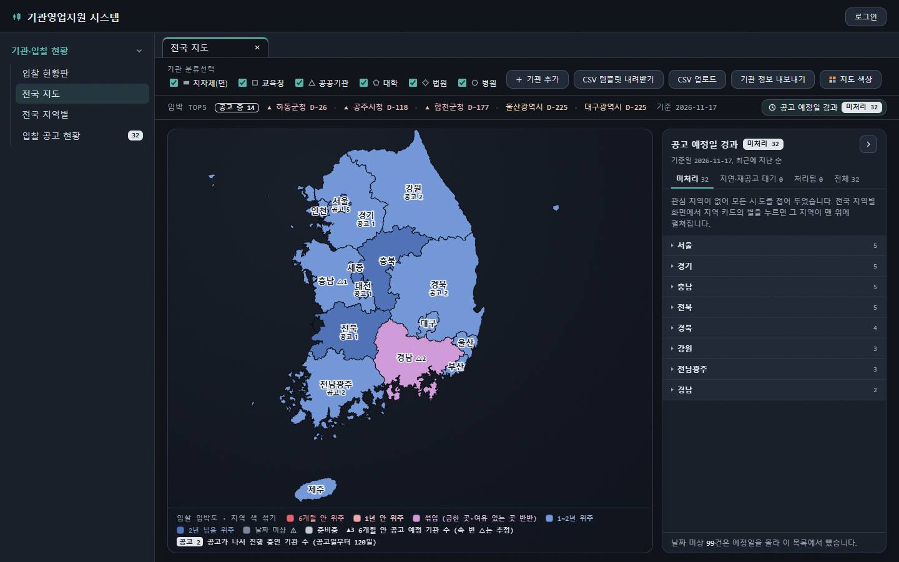
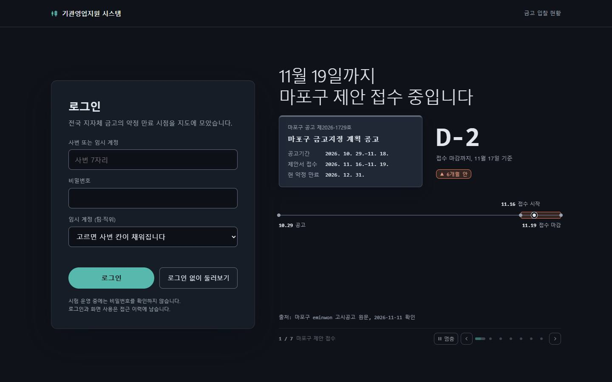
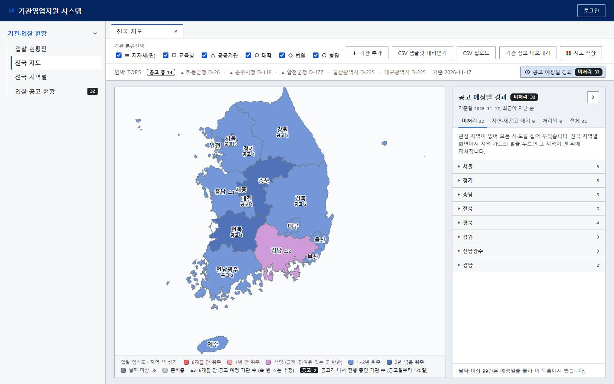
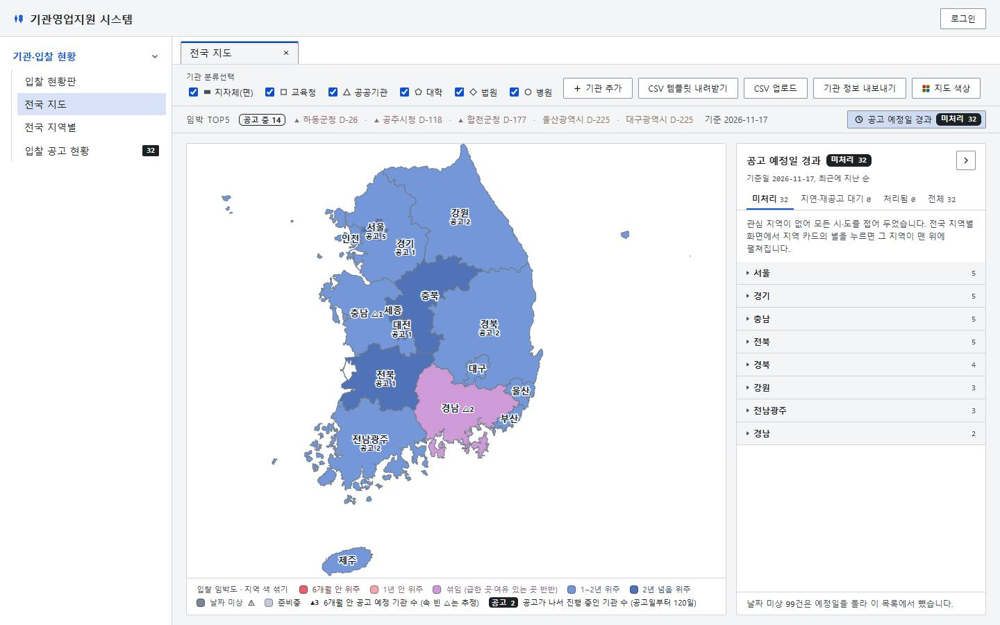
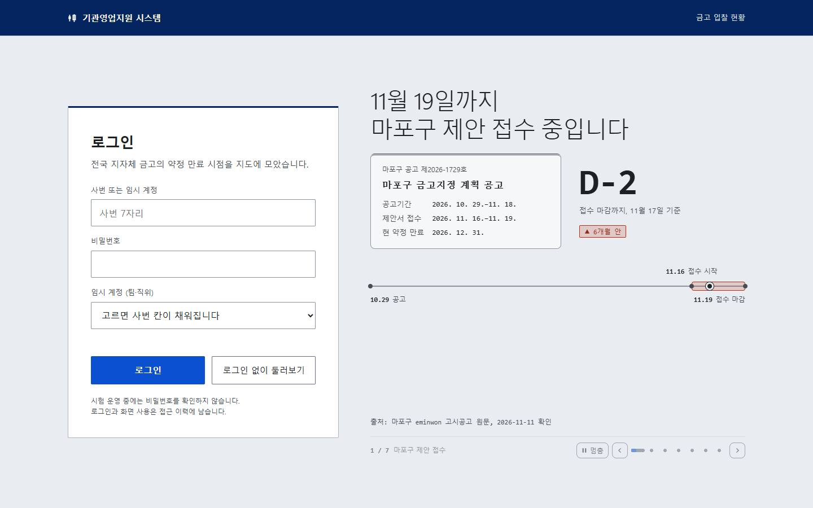
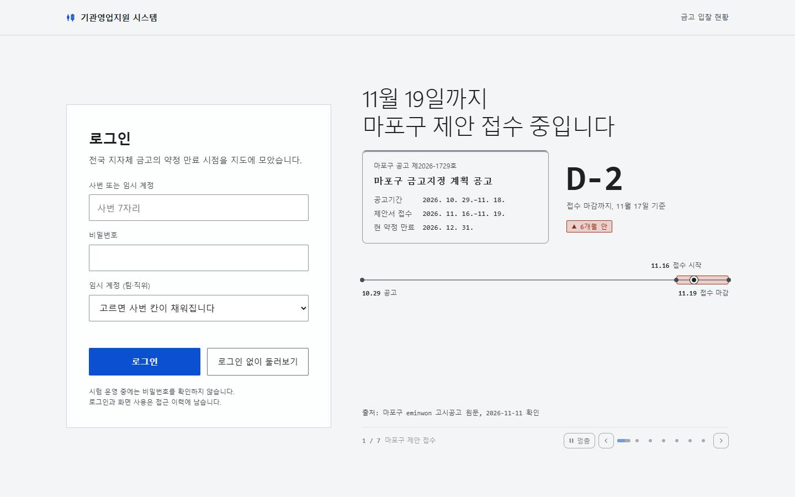

사용자 피드백 "전체적으로 허접해 보인다, 흰 바탕이 많아서?"에 대한 디자이너 시안 2개입니다(진단: handoff/agents/design-reviewer/2026-11-17_1829_a22a0bb4.md). 캡처는 헤드리스 Chrome 1440×900, 서버 없이 파일로 연 로그인 화면과 '로그인 없이 둘러보기' 지도 화면입니다. 시안은 실제 파일이 아닌 사본에 CSS(common.css + 시안 CSS)를 덧입혀 찍었습니다. 사용자가 A/B 중 하나를 고르면 그 CSS를 2단계(모서리·글자 정리)와 함께 실제 화면에 적용합니다.






common.css — 어느 시안이든 적용: 반경 2px 일괄, hover 그림자·떠오름 제거, 글꼴 inherit, 자간 0.mockA_navy.css / mockB_gray.css — 시안별 덮어쓰기. frontend/index.html </head> 앞에 <style>로 넣으면 같은 화면이 나옵니다.